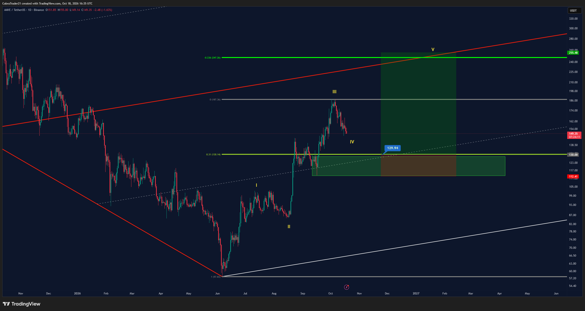
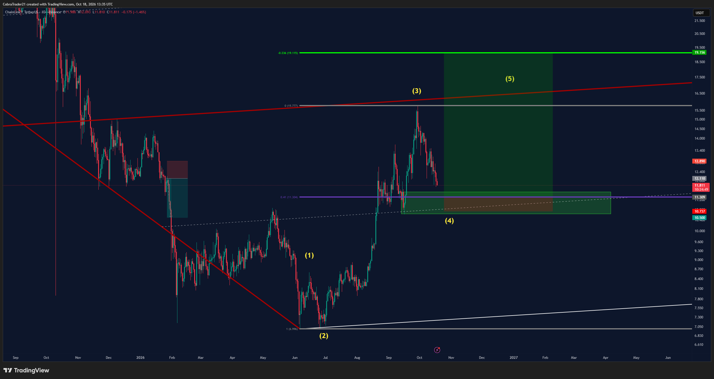
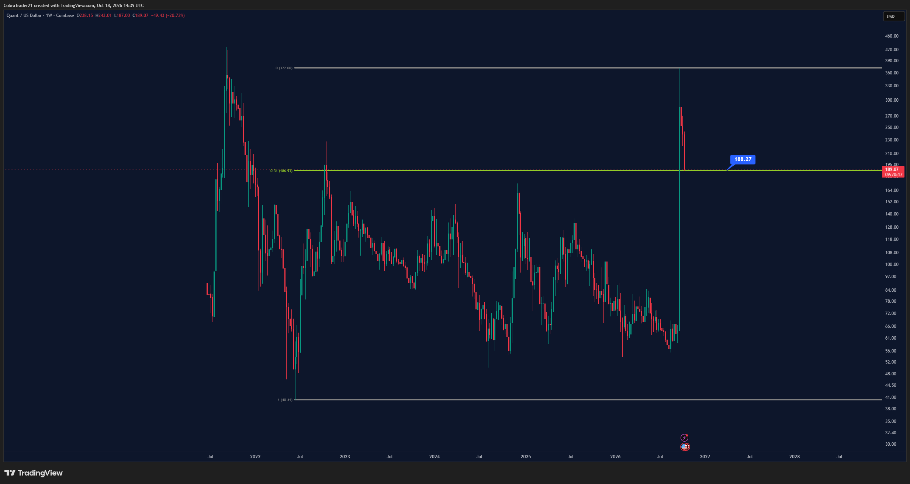

📡 Trades do Discord – 18/10/2026
Preços: BTC 81.576 · ETH 2.389 · SOL 103,11 · LINK 11,89 · QNT 188,28 · AAVE 150,42 · APT 0,7615 · ASTER 0,6931 · KAS 0,0351
- 🟠 Ordem limite pendente: o trade foi postado, mas o preço ainda não chegou na entrada.
- 🟢 Posição aberta: a entrada já foi executada e o trade está valendo.
- 🔴 Estopou: o preço bateu no stop e o trade foi encerrado com perda.
- 📐 Plano no gráfico: cenário desenhado pelo analista, ainda sem ordem.
- Entrada é o preço para entrar; stop é onde se sai se der errado; alvo é onde se realiza lucro. A barra mostra quão perto o preço está da entrada (cheia = quase lá). O sinal ≈ indica valor lido no gráfico.
CobraTrades #VIP-trades, Adaśko VIP e vip-cobra-updates
Trades VIP do Cobra. A cor da bolinha no nome do canal mostra o estado do trade.
NÍVEIS ALTERADOS: ontem só havia o gráfico (entrada ≈11,509 lida das caixas). Hoje às 10:36 o Cobra escreveu "ENTRY: 11.310 / Stoploss: 10.78 / TP1: 12.125 / TP2: 14 / TP3: 16.7" e às 10:41 explicou: zona de demanda forte abaixo, confluência com o 0,41 do Fibonacci, "um swing trade decente". LINK ~11,89 às 19h, entrada ~4,9% abaixo; mínima desde o meio-dia 11,531, não acionou. Sem post novo à tarde. LINK não está no watchlist do relatório diário, então não há leitura do Market Cipher B dele: conferir 4h, 12h e 1D antes, pela regra do tempo gráfico maior.
Novo no 🔵cobra-trade-ideas às 13:35: texto só "AAVE" + gráfico 1D (Binance). Níveis ≈ lidos das etiquetas do gráfico: entrada ≈129,94 (no 0,31 do Fibonacci ≈130,1), stop ≈112,41, alvo ≈255,48 (extensão 0,236 / onda V). AAVE ~150,4, entrada ~13,6% abaixo; mínima desde o meio-dia 146,0, não acionou. AAVE não está no watchlist do relatório diário, sem leitura do Market Cipher B aqui: conferir 4h, 12h e 1D antes.
Primeiro post no canal 🔵cobra-trade-ideas: só "QNT scalp here" + gráficos 1W e 1D (Coinbase). Sem entrada, stop ou alvo no texto nem caixas no gráfico; a única marcação é o 0,31 do Fibonacci semanal ≈186,9, logo abaixo do preço. Pelo desenho parece uma compra nesse suporte, mas a direção não foi escrita. QNT ~189,6 na Binance. Sem alerta, porque não há nível de entrada. À tarde o QNT caiu até 181,74 (Binance), abaixo do 0,31 ≈186,9, e voltou para ~188,3; sem post novo do Cobra sobre ele.
Canal 🟠btc-long, sem post novo desde 16/10. Entrada ≈79.128 (lida do gráfico), SL 77.537, TP 93.604. BTC ~81,58k às 19h, entrada ~3% abaixo; mínima desde o meio-dia 80.684, não acionou. Long contra o 12h e o 1D.
Canal 🟠sol-long-2, sem post novo. Com o long 🟢solana estopado, essa ordem é a reentrada valendo: ENTRY 99,77 / SL 95,67 / TP1 105,7. SOL ~103,1 às 19h, entrada ~3,2% abaixo; a mínima desde o meio-dia foi 100,43, passou perto mas não acionou. Contra o 12h e o 1D (divergência de baixa confirmada no fechamento de 17/10). O alerta COBRA SOL long 2 99,77 já existe desde 16/10.
Às 15:37 o Cobra repostou o gráfico e escreveu "Ainda segurando. Vou afundar junto com o navio". Pelo texto de 16/10 o stop está na entrada (2.317); o gráfico de hoje ainda mostra a caixa de stop original ≈2.234 e alvo ≈2.870. TP1 2.415 já batido. ETH ~2.389 às 19h; a mínima desde o meio-dia foi 2.329, a uns 12 dólares do stop na entrada. Long contra o 12h e o 1D.
O canal virou 🔴. Às 08:47 de hoje o Cobra confirmou: "fui estopado no breakeven na Solana, mas o trade continua válido; pode ser só um fundo duplo normal no 0,31", e preferiu não reentrar porque já tem longs de KAS e ETH. Pela Binance, a mínima de 101,25 às 18h de ontem passou do stop 101,37. Resultado ≈ zero, com 10% de lucro realizado antes. O alerta antigo COBRA SOL long 101,37 perdeu o sentido.
Às 15:38: "Fechamento diário e semanal parecendo bom para o KAS", com gráfico (entrada ≈0,03481, stop ≈0,03327, alvo ≈0,04083). Já tirou 2 parciais de 10%. Sem par spot na Binance (Gate.io ≈0,0351; mínima 24h 0,0342, acima do stop).
Encerrado 14/10 (saiu na mão). O alerta antigo COBRA BTC long 82.085 perdeu o sentido.
Sem mudança desde 04/10. A favor do 12h e do 1D, mas longe (~9% acima; BTC ~81,08k).
Sem mudança desde 21/09. A favor do 12h e do 1D, longe.
Ordem antiga (13/08), sem atualização.
Sem atualização desde 17/09. Continua 🟢.
Sem canal APT em VIP-trades e sem menção nova. APT ≈0,768 na Binance. O Cobra prometeu um vídeo VIP sobre as altcoins que acompanha (postado hoje às 10:26, não assistido).
Sem mudança desde 05/09, ainda 🟠 (categoria "Ethereum"). Preço ~0,70, muito abaixo da entrada.
Sem mudança desde 25/09, ainda 🟠. Adaśko hoje (09:04–09:09) só atualizou gráficos de análise de BTC, ETH e SOL no 4h ("suporte do tempo menor segurando, resistências anteriores seguem valendo") e disse não esperar grandes movimentos no fim de semana.
Jayson Casper #jayson-btc-ta
BTC perpétuo na Bybit. Valores com ≈ foram lidos do gráfico.
Nenhum post no canal desde 15/10 12:22 (checado de novo às 19h). Entrada 80.250,1 (0,6229 BTC ≈ US$50k). Stop/alvo ≈ do gráfico. BTC ~81,58k, ~1,7% acima da entrada; mínima desde o meio-dia 80.684. Long contra o 12h e o 1D.
Sem atualização. Sem níveis numéricos.
Plano antigo; sem novo post.
Sem novo post. BTC ~81,58k está dentro/perto dessa faixa, mas à tarde foi a 80.684, abaixo do stop ≈81.200 do plano, que perdeu força; ele já está no long de 80.250.
Zona onde ele entrou (80.250).
Front-runado; sem mudança.
Sem mudança. A favor do 12h e do 1D. Longe.
Sem mudança. A favor do tempo gráfico maior.
Histórico; encerrado em 12/10.
- O que mudou desde o meio-dia: 1) Ideia nova do Cobra no 🔵cobra-trade-ideas às 13:35, "AAVE" com gráfico de long: entrada ≈129,94, stop ≈112,41, alvo ≈255,48 (níveis lidos do gráfico). AAVE está em ~150,4, a entrada fica uns 13,6% abaixo. 2) Às 15:37–15:38 ele repostou os gráficos de ETH long 2 ("ainda segurando, vou afundar junto com o navio") e KAS ("fechamento diário e semanal parecendo bom"), sem mudar níveis. Às 12:40, no vip-cobra-updates: "Muitas alts perdendo estrutura de mercado. Hora de esperar pullbacks decentes antes de entrar". Nenhuma bolinha mudou, e o Jayson segue sem posts desde 15/10.
- Da manhã (já no relatório das 12h, que não tinha sido publicado): o SOL long (🟢solana) virou 🔴, estopado no 0 a 0 em 101,37, e o Cobra não reentrou; com isso a ordem 🟠sol-long-2 em 99,77 (stop 95,67, alvo 105,7) é a reentrada valendo. O LINK long ganhou níveis oficiais às 10:36: entrada 11,310, stop 10,78, alvos 12,125 / 14 / 16,7. E saiu "QNT scalp here" sem níveis (só o 0,31 semanal ≈186,9 marcado); à tarde o QNT furou esse nível até 181,74 e voltou para ~188.
- Preço à tarde: SOL foi a 100,43 (a 0,7% da entrada 99,77), ETH a 2.329 (perto do stop na entrada 2.317 do ETH long 2) e BTC a 80.684, sem acionar nada. Pela regra do tempo gráfico maior, no fechamento de 17/10 o 1D seguiu com divergência de baixa confirmada em todo o watchlist e o 12h imprimiu ponto vermelho em ETH e SOL, então os longs do Cobra (SOL 99,77, BTC 79.128, ETH, AAVE) e do Jayson vão contra essa leitura; o próprio Cobra fala em esperar pullbacks. Os shorts pendentes (Cobra 88.440 e 2.846, Jayson 84.300/swing) seguem a favor, mas longe. LINK, QNT e AAVE não estão no watchlist, sem leitura do Market Cipher B aqui.
- Alertas no TradingView (Cruzando, uma vez, app + pop-up + e-mail, validade até 17/12/2026, o máximo permitido): às 12h foi criado "COBRA – LINK long entrada 11,310 | SL 10,78 | TP 12,125" (BINANCE:LINKUSDT) e às 19h "COBRA – AAVE long entrada ≈129,94 | SL ≈112,41 | TP ≈255,48" (BINANCE:AAVEUSDT). Nenhum alerta antigo foi apagado. Perderam o sentido: COBRA LINK long ≈11,509 (entrada trocada para 11,310) e COBRA SOL long 101,37 (trade estopou). QNT ficou sem alerta por não ter nível.

Cobra, 18/10 13:35: AAVE long (1D) — entrada ≈129,94, stop ≈112,41, alvo ≈255,48 (lidos do gráfico).

Cobra, 18/10 10:36: LINK long (1D) — entrada 11,310, stop 10,78, alvos 12,125 / 14 / 16,7.

Cobra, 18/10 11:40: "QNT scalp here" (1W) — só o 0,31 ≈186,9 marcado, sem níveis.

Cobra, 16/10 14:32: SOL long 2 — entrada 99,77, SL 95,67 (agora valendo, porque o primeiro SOL long estopou).